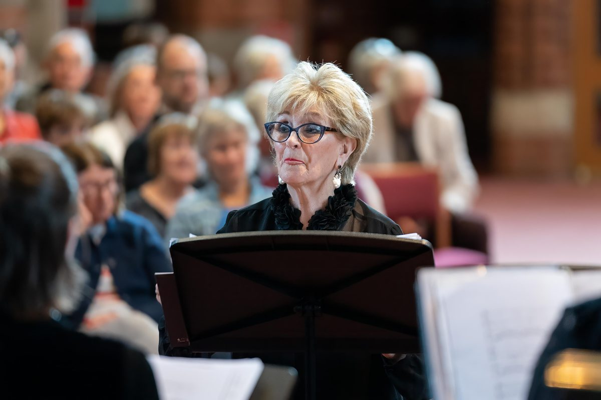

Next Concert
Upcoming Concerts
Elgar Festival 2026
All Saints, Deansway, Worcester WR1 2JJ
Sunday, 3pm. Back by popular demand, the Jenny Lind Singers return to the Elgar Festival with a programme celebrating the works of women composers past and present.
Autumn in Malvern Festival
Stanbrook Abbey, Jennet Tree Lane, Callow End, Worcester WR2 4TY
Sunday, 3pm. Part of the Autumn in Malvern Festival 2026 — an intimate concert in the magnificent surroundings of Stanbrook Abbey.
Christmas Concert
Great Malvern Priory, Church Street, Malvern WR14 2AY
Saturday, 3pm. A concert of music for Christmas including Benjamin Britten's A Ceremony of Carols. Ticketing details to follow.
Past Performances

The Jenny Lind Singers have performed at Great Malvern Priory, Worcester Cathedral, Stanbrook Abbey, and the Elgar Festival. If you would like to be notified of future concerts, join our mailing list.